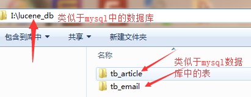

环境搭建
Lucene框架类似于mybatis、hibernate等持久层框架，mybatis、hibernate框架可以与mysql、oracle等关系型数据库进行交互，然后Lucene并不是与mysql、oracle等关系型数据库交互而是与Lucene索引库交互；
在写入门案例之前我们需要在本地磁盘上创建一个文件夹作为Lucene的索引库（类似mysql中的数据库），该文件夹下可以再细分创建多个子文件件（类似于mysql数据库中的表），注意索引库的路径中不能包含中文、空格以及特殊字符；

是不是觉得Lucene索引库的创建比mysql数据库的安装简单多了，完成以上步骤之后就可以开始搭建入门案例啦！